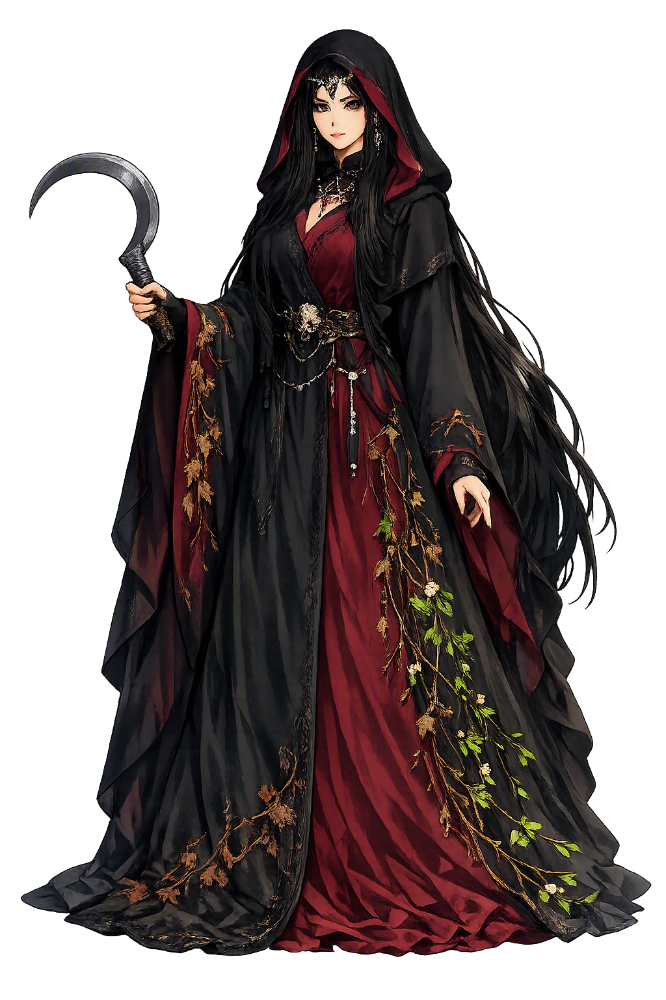

Stories of Morana
Slavic paganism wrote almost nothing down, so Morana's mythology survives as a rite, a name, and a constellation of village customs across Poland, Bohemia, Moravia, Slovakia, and the Balkans — read together, they amount to a complete theology of winter's death and spring's return, kept alive by practice rather than by any book.
Morana reaches us obliquely, through the margins of other people's books. Her earliest written trace is a fifteenth-century Latin–Polish school glossary, the so-called Medulla Grammatice, where the Latin word mors — 'death' — is glossed with the Polish morana; schoolboys were being taught the goddess's name as the plain word for dying. Sixteenth-century writers then describe the rite itself: Marcin Siennik complains of peasants who fashion a straw woman at winter's end and drown or burn her in the name of Marzanna, and Maciej Stryjkowski's chronicle records the custom in the villages of Mazovia. No epic survives in which Morana acts, and no chronicler retells her deeds. What survives is a name, a meaning, and a crowd of village rituals that kept both alive. The myth tells us how this tradition stored its goddess: not in pages, but in practice — in a rite repeated so faithfully that five centuries of theologians could not kill it.
On the fourth Sunday of Lent — or on the spring equinox in the older reckoning — the village takes a figure of straw and rags dressed as a woman and carries it in procession to the riverbank: Morana's Polish ritual self, Marzanna. The girls who carry her sing farewells to winter; then the effigy is doused with water, drowned, and often burned where it lies. Her Moravian and Slovak cousins carry the Morena doll out on 30 April and throw it into the stream while the children cry that Morena should carry winter out of the village with her. The Church denounced the custom for centuries as a pagan survival; Communist-era ethnography filed it under folklore; neither suppressed it, and after 1989 the rite returned openly to Polish schools. Today children across Poland still drown and burn Marzanna every spring. The rite enacts the year's great transaction: winter is not begged to leave — it is killed, and spring arrives as the corpse sinks.
Modern scholarship has tried to give Morana the love-story the medieval sources never recorded. The Indo-Europeanists Vyacheslav Ivanov and Vladimir Toporov reconstructed a full seasonal cycle: Morana, winter's queen, is wooed and wed in spring by the vegetative god Jarilo; he abandons or dies with the autumn, she murders him in revenge, and the world freezes in her grief until the returning sun avenges him in spring. The reconstruction rests on comparative folklore and seasonal rite rather than on any surviving Slavic epic, and specialists debate its every stage — but it has been embraced by Slavic Rodnovery communities, for whom the wedding, betrayal, and killing of Morana and Jarilo form the turning myth of the liturgical year. The uncertainty itself is instructive: folklore supplied the rite, and scholarship supplied the plot. Whatever its age, the cycle says what the drowning already implies — winter is not weather but a person, who loves, mourns, and can be made to die.
The name tells the whole story by itself. Proto-Slavic *morà meant at once death, pestilence, and the crushing demon of bad dreams — and its daughters still do the same work: Polish zmora is the night-hag that paralyses the sleeper, Serbo-Croatian mòra the fever-vision that rides the chest, Russian mor the plague that empties villages. The word is an inheritance, not an invention. Greek has μόρος, doom; Latin has mors, death; Sanskrit has mṛtyú; Lithuanian has mirtìs — linguists read the family back to an Indo-European root *mer-, 'to die' (Beekes, EDG s.v. μόρος; ESSJa s.v. *morà). To name the goddess is therefore to invoke a constellation in which winter, disease, and nightmare are one phenomenon: the cold weight that settles on the world and on the sleeping body alike. Slavic folklore never separated them, and its goddess keeps all three meanings folded into a single name.
Winter
Morana (Morena, Mara, Marzanna) is the Slavic goddess of winter and death — the cold season and the mortality it threatens made into a single female figure. Where she walks, the ground freezes; where her effigy is drowned and burned, the thaw begins. She is among the few Slavic divinities whose name and rite survive in attestation from the Middle Ages to the present day.
Every Slavic form of her name descends from Proto-Slavic *morà — 'death, pestilence, nightmare' — the old word-family of dying that Greek μόρος and Latin mors also inherited.
She is the season itself: Czech and Slovak children still carry Morena's effigy to the water on 30 April, while in Poland the drowning of Marzanna closes the winter half of the year.
No Slavic goddess has a better-attested continuous ritual: the straw effigy drowned or burned at winter's end is described in writing from the sixteenth century and performed to this day.
Preserved as a flagship temple despite the unregistrable plain-ASCII form.
From the original script to the living URL
Morana
The name survives in scholarly transliteration. Morana is the standard Slavic romanisation, documented in academic sources — “Death”. Because the spelling uses only Latin letters, the form is the same in both ASCII and Unicode.
No indigenous writing system is securely attested for individual slavic names. The form shown is a modern scholarly transliteration.
morana
The plain morana form is identical to the Unicode restoration. Because this name is already written in Latin letters, no diacritics, stress, or script information were lost — only capitalization differs.
Morana
The Unicode restoration does not need to recover lost marks for Morana. Its value is canonical spelling and consistent cataloguing, not the reconstruction of erased orthography. The domain is readable as-is to both DNS and humanity.
Morana.com
This restoration is written entirely in ASCII letters — no Punycode encoding stands between Morana and the DNS. The domain reads identically to machines and to human eyes.
Owned, ideal, and ASCII forms of Morana
Morana
The full Unicode restoration. morana.com is not in the PuniCodex collection — it is watched for release; if it drops, this temple upgrades to an owned flagship.
How Morana was spoken
How Morana is preserved in writing
No indigenous writing system is securely attested for individual slavic names. The form shown is a modern scholarly transliteration.
Contribute scholarly provenance →What is remarkable about Morana is not what was written about her — almost nothing was — but what was done. A goddess with no epic, no temple, no priesthood survives five centuries of written history because a village decided, every year, to dress a straw doll and drown it. The rite is her entire biography, and it is enough. In it we see how religion actually works: not as doctrine but as a repeated, embodied agreement about what time is doing to us. Winter arrives, winter oppresses, winter is beautiful and lethal, and winter is carried to the water and drowned by the people it starved. Morana teaches that the seasons are relationships, not weather. She is the one goddess every Slavic child meets personally — in their own hands, at their own riverbank — and she asks the oldest question in myth: if you cannot banish the cold, can you at least give it a face, and drown the face?
Enter Extended Lore